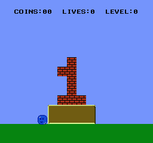
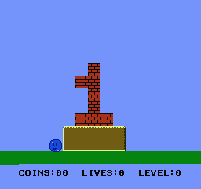

18、Sprite Zero
这个不是很好解释，超级玛丽1用了这个功能，后来很多人都把这个作为一个游戏的标准来对待。
屏幕顶端固定，底屏滚动，就可能是sprite zero的分割效果。
sprite zero指的是OAM中的第一个sprite，地址是 0-3.PPU第一次在背景的非透明像素上看到sprite zero的非透明像素时候，标记了一个标志(寄存器$2002).我们可以查找此标志，并用他来计算中间屏幕的时间，如x的滚动。
等待这个标志非常消耗CPU，最好使用mapper映射器生成IRQ，如MMC3/MMC5的扫描线计数器，Konami VRC 2,4或6扫描线计数器。卡带可以帮我们计数，而不需要轮询2002，并且可以每帧多次拆分。
但是，我决定不在本教程中介绍IRQ。您需要学习ASM才能使用它们，因为IRQ代码需要用ASM编写。
无论如何。一旦它命中，你知道PPU在屏幕上的特定行上，你可以改变滚动位置。
写2005两次，只能改变X滚动。
我们在每个帧上做的第一件事是立即轮询sprite zero，如果错过了很有可能让游戏崩溃，发送实际X.它将调整滚动中间屏幕。
split(scroll_x);
我们必须调整屏幕绘图代码，不要覆盖屏幕顶部。现在我们有一个稳定的HUD，我们可以绘制我们的统计数据。

https://github.com/nesdoug/21_Sprite_Zero/blob/master/sprite_zero.c
https://github.com/nesdoug/21_Sprite_Zero
而且，为了与自己发生冲突，我们实际上可以通过复杂的2006 2005 2005 2006技巧改变Y卷中画面。我最后这个（屏幕的底部），这更危险，因为在运行此功能之前跑过帧的末尾，整个游戏可能会崩溃，如果它从未发现Sprite零命中。
但是，我想证明这是可能的，即使你永远不应该使用它。也许对于比我更勇敢的人。也许是在垂直滚动游戏中的屏幕顶部。
无论如何，我做了这个功能......
xy_split（X，Y）;
我不得不对平台游戏进行一些更改，因为整个屏幕现在对齐得更高，所以我不得不调整bg碰撞的y值。这可能不是理想的设置，但我只想展示它。我把屏幕的顶部放在屏幕的底部。
这是一个例子。我想我应该使用垂直滚动代码来更好地展示这一点。这可以通过常规拆分代码完成。

https://github.com/nesdoug/22_XY_Split/blob/master/xy_split.c
https://github.com/nesdoug/22_XY_Split
而且我非常担心在游戏中导致滚动错误的减速，我最终没有在最终游戏中使用精灵零点击，最后出现。这些示例工作正常，因为没有太多的游戏逻辑，但只要我们添加一些敌人并移动它们并且必须检查碰撞，逻辑就会超过1帧，而减速会导致每个第2帧出现晃动错误。
值得注意的是，Mojon Twins（na_th_an）在他的许多游戏中都使用了相同的sprite零分割，并告诉我如果滚动问题发生就重构。将长任务拆分为2个不同的框架。例如，仅检查一帧的一半碰撞。
我依旧很懒。。。就前几行凑合翻译了下，后面的以后再改了,实在看不懂这个作者的鸟语，写的太精简了